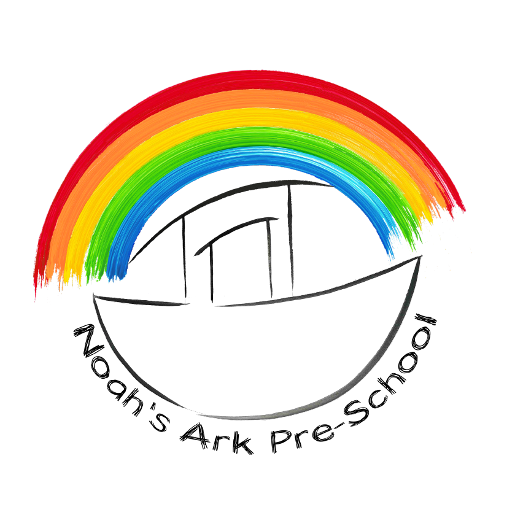

Noah's Ark Pre-school
"Supporting children and families with God's love and practical care"
The 5 key principles that inform our vision for Noah’s Ark:
- Building warm and nurturing relationships in partnership with families.
- Delivering quality Early Years provision for all of our children.
- Valuing every child’s unique character and potential.
- Promoting a positive team ethos within the Noah’s Ark community.
- Promoting positive connections within the wider community.
We love to support families in as many ways as we can and we take care to get to know you and your child. We appreciate that bringing up children can bring huge joy but also create challenges.
